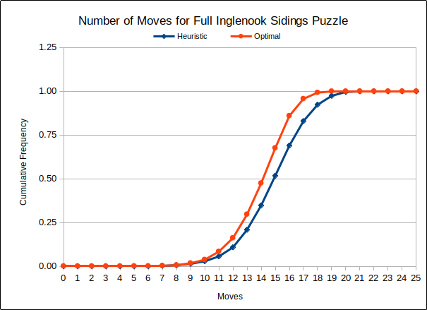

/------------- Track 3
/ 3 cars
West /
/---------------- Track 2 East
Switching Lead, Track 0 / 3 cars
(Head Shunt) /
------------------------/--------------------- Track 1
Engine + 3 cars 5 cars
For input and output the tracks are represented by lists containing the occupying cars in the order from west to east.
The cars are represented by the numbers 1 to 8. The engine is represented by zero.
The engine is assumed to be on the west end of all movements. The engine must be on the west end of track 0 in the start and end conditions (states).
Start: Five cars on track 1, three cars on track 2, engine on lead. Cars are randomly assigned the numbers from 1 to 8.
End: Five cars on track 1, three cars on track 2, engine on lead. Cars are in increasing order starting on west end of track 1.
Example:
Start: Track 0: 0 (engine)
Track 1: 3, 2, 7, 5, 1
Track 2: 4, 8, 6
Track 3: empty
End: Track 0: 0 (engine)
Track 1: 1, 2, 3, 4, 5
Track 2: 6, 7, 8
Track 3: empty
A solution is a series of puzzle “states” connected by a move, either a “pull” or “drop” of 1 to 3 cars
The number of cars in a move is constrained by the track capacities
Here is a solution to the example above:
Moves: 14
Solution:
[[0], [3,2,7,5,1], [4,8,6], []] (Start state)
[[0,3], [2,7,5,1], [4,8,6], []] Pull 1 Track 1
[[0], [2,7,5,1], [4,8,6], [3]] Drop 1 Track 3
[[0,2], [7,5,1], [4,8,6], [3]] Pull 1 Track 1
[[0], [7,5,1], [4,8,6], [2,3]] Drop 1 Track 3
[[0,4,8,6], [7,5,1], [], [2,3]] Pull 3 Track 2
[[0,4,8], [6,7,5,1], [], [2,3]] Drop 1 Track 1
[[0,4], [6,7,5,1], [8], [2,3]] Drop 1 Track 2
[[0,4,6,7], [5,1], [8], [2,3]] Pull 2 Track 1
[[0,4], [5,1], [6,7,8], [2,3]] Drop 2 Track 2
[[0,4,5,1], [], [6,7,8], [2,3]] Pull 2 Track 1
[[0,4,5], [], [6,7,8], [1,2,3]] Drop 1 Track 3
[[0], [4,5], [6,7,8], [1,2,3]] Drop 2 Track 1
[[0,1,2,3], [4,5], [6,7,8], []] Pull 3 Track 3
[[0], [1,2,3,4,5], [6,7,8], []] Drop 3 Track 1Each of the 2,580,480 possible puzzle states is a node in a graph where two nodes are connected by an edge if there is an allowed move between them. (Since any move is reversible, the edges are said to be “undirected.”)
The standard final state is set as the “root node”
The algorithm finds a shortest path (a series of edges) from each node to the root node
In particular, a path found from any of the 40320 (= 8!) standard start states to the root node is an “optimal” puzzle solution because it has the fewest moves possible (but it is not necessarily unique)
A table constructed from the algorithm can be used to produce a puzzle solution on demand when any puzzle state is set as the start; but the final state must be the standard final state unless the entire table is recalculated with a new root node.
The start state is the root node of a tree graph. The child (successor) nodes of the root node are the puzzle states that can be reached by a single move from the root node.
The child nodes of any other node are the states that can be reached by a single move from the “parent” node and meet two conditions:
The condition (1) above is mandatory for the graph to be a tree. The condition (2) is not required, but it cuts down the size of the tree and the time of the search without hurting the search for a shortest solution path. Because no shortest solution will have two successive moves on the same track. (Think about it!)
The iterated depth-first search algorithm starts at the root node and looks for the final state by successively travelling down the paths of increasingly deeper trees until it finds a node that is the final state. The solution is then the series of nodes on the branch from the root node to the final state node.
An iterated depth-first search will also find a puzzle solution with the miniumum possible number of moves. However, it can take a long time, as the trees grow very quickly in size as they get deeper.
If one is willing to accept solutions that are not always of shortest length (but are not too long), there is a way to modifiy the iterated depth-first approach that has “reasonable” calculation times.
Start with an iterated depth-first search, but instead of ending at the final state, stop when the search comes to any node with the last two cars on Track 1 the same as the last two cars on Track 1 in the final state. Call this the “intermediate node.”
Then do a second search starting from the intermediate node and ending at the final state.
Splice the two partial solutions together (and drop the intermediate node if keeping it would result in two successive moves on the same track). Call this the “forward” solution.
Redo the three steps above, but starting with the final state and ending with the start state. Call this the “reverse” solution.
Choose the shorter of the forward and reverse solutions as the final heuristic solution, reversing the reverse solution if it was chosen.
| - Moves - | - Heuristic % - | - Optimal % - |
|---|---|---|
| < 10 | 1.39 | 1.70 |
| 10 | 1.43 | 2.00 |
| 11 | 2.74 | 4.65 |
| 12 | 5.20 | 7.75 |
| 13 | 10.05 | 13.49 |
| 14 | 13.91 | 17.80 |
| 15 | 16.97 | 20.15 |
| 16 | 17.27 | 18.42 |
| 17 | 14.00 | 9.74 |
| 18 | 9.34 | 3.55 |
| 19 | 5.10 | 0.73 |
| 20 | 2.21 | 0.02 |
| > 20 | 0.37 | 0.00 |

We see that on the whole, the distribution of heuristic solutions is only about one move more than the optimal solutions
But a more meaningful comparison, especially for the puzzle player, might be a pairwise comparison of the two solution methods
How does a particular heuristic solution compare to the optimal solution of the same start state? It can’t be shorter, but we hope it isn’t too much longer.
Below is a frequency table for the differences (heuristic solution length) - (optimal solution length) for all 40320 standard start conditions:
| Difference | Percent |
|---|---|
| 0 | 45.4 |
| 1 | 30.5 |
| 2 | 17.6 |
| 3 | 5.5 |
| 4 - 6 | 1.0 |
About 45% of the puzzle start states have a heuristic solution that is optimal (minimum possible number of moves)
About 31% of the heuristic solutions are only one move longer than the minimum possible
About 18% are only two moves longer
About 6% are three moves longer
One percent are four or more moves longer